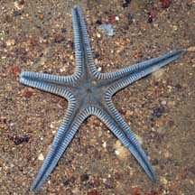
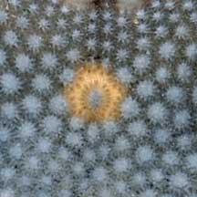
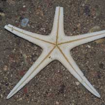
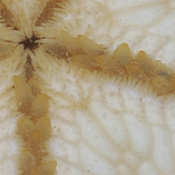
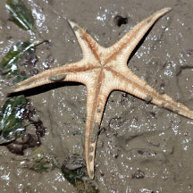

|
|
| sea stars text index | photo index |
| Phylum Echinodermata > Class Stelleroida > Subclass Asteroidea |
| Bordered
sea star Craspidaster hesperus Family Astropectinidae updated Jul 2020 Where seen? This beautiful sea star is sometimes seen on Beting Bronok. 'Craspedo' means border or edge. According to Lane, this sea star is seen from the Bay of Bengal to China and southern Japan. According to Marsh and Fromont, it is seen on muddy sand or mud in Australia. Features: Diameter with arms about 10cm. A flat sea star with five elegant smooth tapered arms. Upper surface pale blue sometimes beige, and covered with special flat-topped, pillar-like structures called paxillae. The body edges are bordered with large, wide marginal plates. Underside pale without markings, tube feet are pointed (not tipped with suckers). What does it eat? According to Marsh and Fromont, it probably eats microscopic life found in the silt and sand. |
 Beting Bronok, Jul 08 |
 Paxillae cover the upper body. |
|
 Underside. |
 Pointed tube feet. |
| Bordered sea stars on Singapore shores |
On wildsingapore
flickr
|
| Other sightings on Singapore shores |
 |
|
Links
References
|